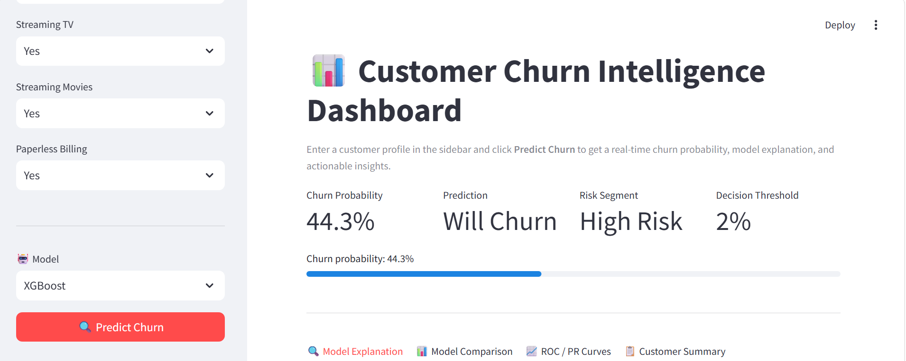
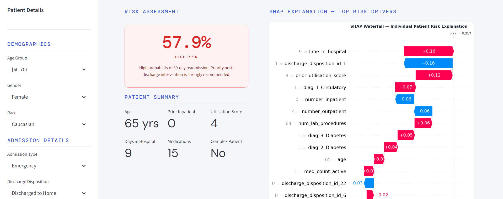

Projects
Retail Sales Analytics Pipeline
SQL · Data EngProduction-style analytics pipeline processing 1.6M+ e-commerce transactions across 9 relational tables.
Problem
Raw e-commerce transactions had no analytical structure — no customer segmentation, no delivery performance tracking, no revenue attribution.
Approach
Designed a full Medallion Architecture (Bronze → Silver → Gold) in PostgreSQL. Applied RFM analysis, cohort analysis, and window functions across 9 relational tables.
Key Insights
- Champions (12.3% of customers) drive 21.1% of total revenue
- Potential Loyalists (24.8%) contribute only 8.6% — clear upsell opportunity
- Victoria: top-volume market but 86.82% on-time delivery — logistics underperformer
PostgreSQL
Medallion Architecture
CTEs
Window Functions
RFM Analysis
Cohort Analysis

Customer Churn Analysis & Revenue Recovery
ML · StreamlitPredictive churn model identifying high-risk telecom customers with $120K annual revenue recovery potential.
Problem
Telecom business losing customers with no visibility into who was at risk or why — retention was reactive, not predictive.
Approach
Benchmarked Logistic Regression, Random Forest, and XGBoost on 7,043 customer records. Engineered 15+ behavioural features. Built a Streamlit dashboard for non-technical stakeholders.
Key Insights
- ROC AUC 0.85, 81% accuracy via cross-validation
- Estimated $120K annual revenue recovery potential identified
- XGBoost outperformed — contract type and tenure were top churn drivers
Python
XGBoost
Scikit-learn
Streamlit
SQL
Logistic Regression

-->30-Day Hospital Readmission Risk
Clinical AI · XAIClinical risk prediction model on 101,766 patient records with explainable AI dashboard for healthcare users.
Problem
Hospitals need to flag high-risk patients before discharge, but clinicians can't trust a black-box model — interpretability is non-negotiable in healthcare.
Approach
Engineered 96 features. Addressed class imbalance with stratified 5-fold CV. Bayesian hyperparameter tuning via Optuna (50 trials). SHAP for explainability.
Key Insights
- ROC AUC 0.67 — consistent with published clinical benchmarks
- SHAP surfaced interpretable clinical risk factors per patient
- Streamlit interface built for non-technical clinical users
Python
XGBoost
SHAP
Optuna
Streamlit
Scikit-learn

Cancer Risk Stratification via Multi-Omics
Capstone · HDMulti-omics analysis of 1,200 colorectal cancer patients — graded High Distinction by UTS academic examiners.
Problem
Colorectal cancer treatment is not one-size-fits-all — identifying clinically distinct patient subgroups from high-dimensional biological data requires dimensionality reduction and unsupervised learning.
Approach
Integrated four biological data types. Reduced feature dimensionality by 80% to isolate meaningful signals. Applied unsupervised clustering and SHAP to explain subgroup drivers.
Key Insights
- Identified 3 clinically distinct patient risk subgroups
- SHAP surfaced top 15 biomarkers per subgroup
- 80% dimensionality reduction without loss of clinical signal
Python
Pandas
SHAP
Scikit-learn
Dimensionality Reduction
Clustering